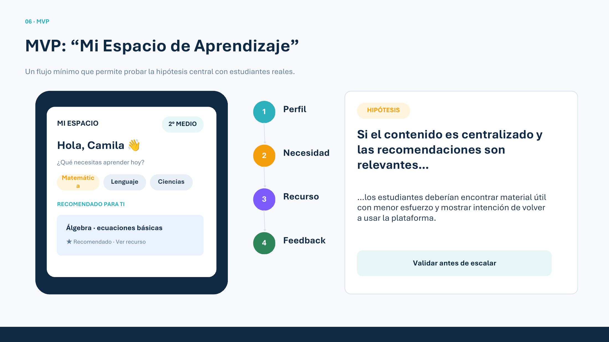
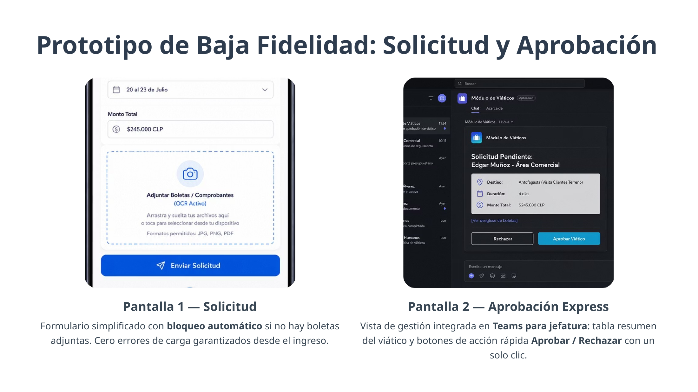
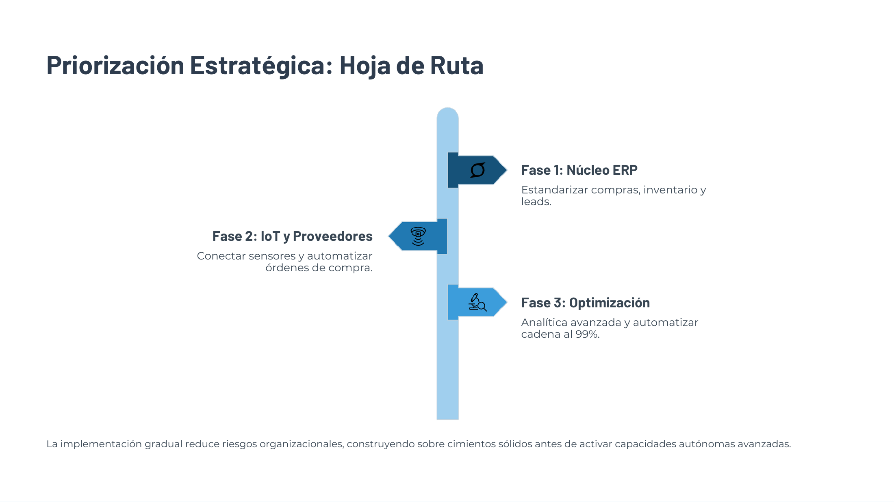
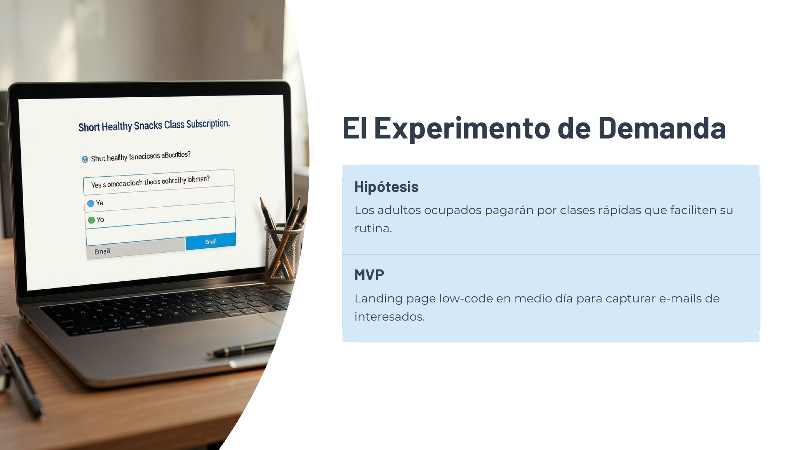

Ingeniero Comercial con más de 10 años de experiencia en negocio, clientes y procesos. Estoy construyendo mi transición hacia Producto, combinando visión de negocio, orientación al usuario y metodologías ágiles.
Ver proyectosMi experiencia profesional me ha permitido trabajar directamente con clientes, detectar necesidades, levantar requerimientos, proponer alternativas y coordinar procesos. Hoy llevo esa experiencia al mundo digital mediante formación práctica en Product Ownership y metodologías ágiles.

Definición de propósito, usuario, MVP, riesgos, KPIs, Story Mapping, RACI y roadmap para validar antes de escalar.

Problema operativo → ideación → matriz impacto/esfuerzo → prototipo → validación. El caso reporta SUS 92,5/100 con 3 usuarios.

Hoja de ruta para pasar de sistemas fragmentados a una fábrica inteligente interconectada.

Hipótesis de demanda y landing low-code para capturar e-mails y decidir con señales de conversión antes de construir más.
Empathy Map, Design Thinking, necesidades, problemas y oportunidades.
Backlog, MoSCoW, Story Mapping, alcance, hipótesis y criterios de aceptación.
Prototipos, pruebas tempranas, KPIs, feedback y mejora continua.
Ingeniero Comercial | Product Owner en formación | Producto, Negocio y Cliente | Agile / Scrum | Discovery & Priorización
Soy Ingeniero Comercial y actualmente estoy en formación como Product Owner. Tengo más de 10 años de experiencia en áreas comerciales, relación con clientes y gestión de procesos, donde he desarrollado una fuerte orientación al usuario y al negocio.
Me interesa transformar necesidades reales en oportunidades de producto: entender el problema, levantar requerimientos, priorizar, definir historias de usuario y acompañar la entrega de valor.
He aplicado herramientas como Agile/Scrum, Story Mapping, Lean Canvas, VSM, Design Thinking, KPIs y prototipado en proyectos académicos y prácticos de transformación digital.
Mi objetivo es integrarme a equipos de producto y tecnología como Product Owner, Product Analyst o Business Analyst, aportando visión de negocio, cercanía con el cliente y una mentalidad de aprendizaje continuo.
Visitar LinkedIn“Hola, soy Edgar Maureira, Ingeniero Comercial y Product Owner en formación. Tengo más de 10 años de experiencia trabajando con clientes, procesos y objetivos comerciales, y hoy estoy llevando esa experiencia al mundo digital. Me especializo en entender necesidades, ordenar problemas, levantar requerimientos y transformar esas necesidades en propuestas de producto usando herramientas ágiles como historias de usuario, priorización, Story Mapping y Design Thinking. Mi diferencial es combinar visión de negocio y orientación al cliente con una mentalidad de producto y aprendizaje continuo.”
Durante mi formación como Product Owner he ido entendiendo que la agilidad no se trata solo de trabajar en sprints. También se trata de aprender rápido y tomar mejores decisiones.
En una Inception para una plataforma educativa, el foco fue entender al usuario y definir un MVP que permitiera validar una hipótesis. En otro proyecto, aplicamos Design Thinking para rediseñar un flujo de viáticos y validamos un prototipo con una evaluación SUS de 92,5/100.
Estos ejercicios me han confirmado que un buen Product Owner no solo administra un backlog: ayuda al equipo a entender por qué estamos construyendo algo y qué evidencia necesitamos para saber si funciona.
#ProductOwner #Agile #ProductManagement #TransformacionDigital #AprendizajeContinuo